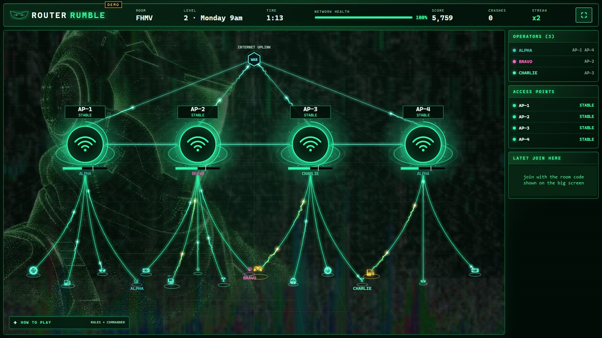
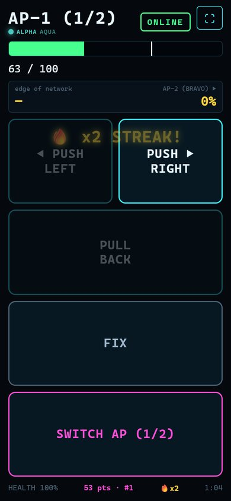
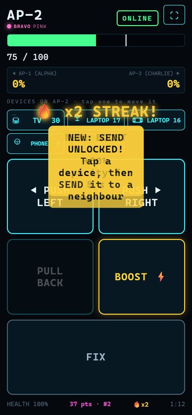
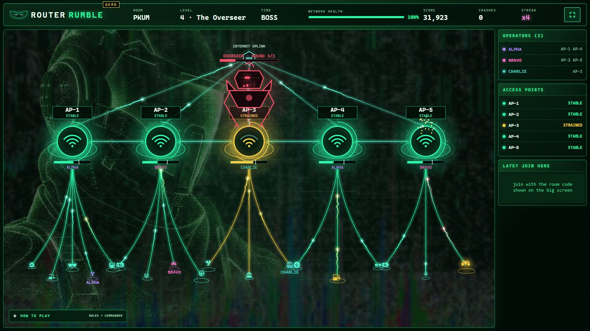
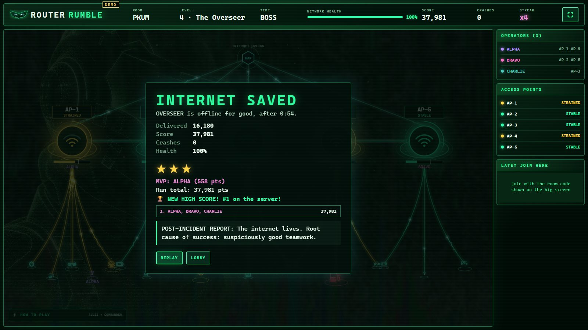

"Keep the internet alive together, while the internet tries to kill you." A co-op party game: the big screen shows a Wi-Fi network, and every player's phone is both a controller and a device on that network. Routers overload and crash, and the team has to reroute traffic before network health hits zero.
My role: a team of three at the Codex Hackathon (October 2026). I handled most of the web interface, designed the device icons, and built the game's backend controls.

Open it on a laptop or TV, then scan the QR code with your phones. Press D on the big screen to let bots play if you're on your own.
Screenshots from a real run with three phones and demo bots. The QR codes in them were covered because they pointed at a local test server. On the free hosting tier the game sleeps when idle, so the first load can take up to a minute.


Each player runs an access point. The phone shows exact load numbers that the big screen doesn't, so the team has to talk. PUSH traffic to a neighbour, BOOST capacity for 5 seconds, FIX crashed routers, and from level 2 SEND a hungry device to another access point. Every tap gives feedback: points, streaks, and a buzz on real achievements.


Level 1 is a gentle onboarding round with one kind of enemy. Level 2 adds viruses that eat bandwidth and spread, and unlocks moving devices. Level 3 ramps up the speed, and level 4 is the final boss, whose health scales with the number of players.
One screen runs the game. The big screen runs the simulation 10 times a second and draws at 60 fps. The Node.js server only relays messages within each room, so it stays light with many rooms.
Built for a crowded room. Up to 10 players per room and 30 rooms per server. A phone that drops keeps its spot for 15 seconds, and inputs are rate-limited so a spammer can't crash the server. In a load test, 250 simulated players across 25 rooms each kept about 10 updates per second, using around 100 MB of memory.
An optional AI commander. With an OpenAI key, an "incident commander" comments on the game, with a 3-second timeout. Without a key, or on any error, it falls back to written lines, so the game never waits on the AI and runs fully offline.